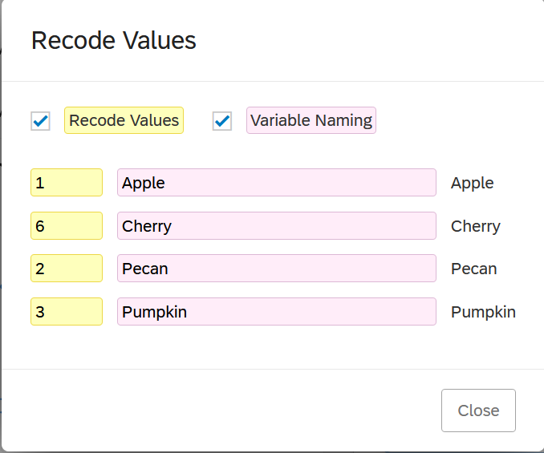
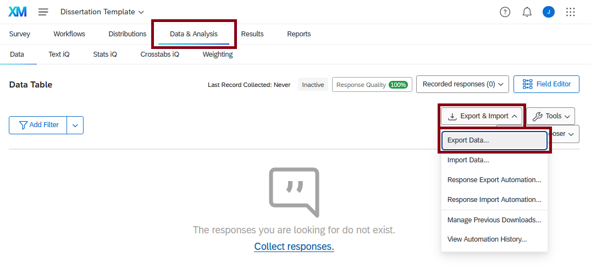
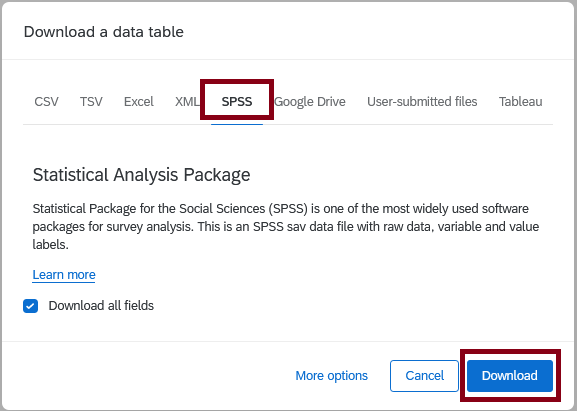

library(tidyverse)
library(haven)
library(labelled)
library(sjPlot)09: Labelled Data and Qualtrics
Overview
This tutorial will focus on efficient, transparent, and user-friendly techniques for working with data specifically gathered using the Qualtrics survey platform, but more generally any data in SPSS’s .sav file type. We will cover how to import and work with labelled data from Qualtrics and how to easily produce a data dictionary straight from the dataset itself.
Acknowledgements
This tutorial was co-written with Dr Dan Evans, drawing on her existing resources for Qualtrics and her extensive experience supporting dissertation students.
The material in this tutorial was originally co-conceived with two brilliant PhD researchers, Hanna Eldarwish and Josh Francis, who contributed invaluable input throughout the process of developing the tutorial. Hanna Eldarwish also provided the basis for the dataset, collected during her undergraduate dissertation at Sussex under the supervision of Dr Vlad Costin.
Qualtrics
Qualtrics is a survey-building tool very commonly used for questionnaire-type studies, as well as some experimental work. The University of Sussex has an institutional licence for Qualtrics, so all staff and students can log in with their Sussex details and easily construct and collaborate on surveys.
For help using Qualtrics itself, the Qualtrics support pages are generally excellent. This tutorial will only briefly touch on the options within Qualtrics itself.
Once the study is complete and responses have been collected, you will need to export your data from Qualtrics so that you can analyse it. Qualtrics offers a variety of export data types, including our familiar CSV type. However, we’re going to instead explore a new option: SAV data.
SAV Data
The .sav file type is associated with SPSS, a widely used statistical analysis programme. So, why are we using SPSS files when working in R?
Importing via .sav has two key advantages. First, it results in a much cleaner import format. If you try importing the same data via .csv file, you’ll find that you need to do some very fiddly and pointless cleanup first. For instance, the .csv version of the same dataset will introduce some empty rows that have to be deleted with dplyr::slice() or similar. The .sav version of the dataset doesn’t have any comparable formatting issues.
Most importantly, however, importing .sav file types into R with particular packages like {haven} gets us a dataset with a special type of data: namely, labelled data. The labels allow us to preserve important information about the questions asked and response options in Qualtrics, and to (mostly) painlessly create codebooks for datasets. We will explore these features in depth in this tutorial.
Important
The following section is most useful when you are creating your Qualtrics questionnaire. If you are just starting your study, you’re recommended to read this section in full.
If you already have a Qualtrics questionnaire, be very careful about editing it after data collection has begun. Minimally, if you do decide you want to make changes, export copies of both your dataset and your questionnaire before you make any edits.
If you have a dataset in Qualtrics, jump down to exporting data.
If you already have data in .sav format to work with, either your own or the example data for this tutorial, jump down to the next section.
Setting Up Qualtrics
In this section we’ll have a quick look at how to set up Qualtrics to work as smoothly as possible with R. This has also previously been covered in a QQM Skills Lab.
Blocks
Blocks are the way that Qualtrics organises pieces of the survey. Essentially, everything in the same block becomes a unit. You can have multiple questions per block, or just one. Blocks are vital for creating a study that appears as you want, but they won’t have any substantial impact on the format of the data.
Explaining blocks and how they can be arranged is a bit outside the scope of this tutorial, so see the Block Options page in the Qualtrics guide for more details.
Questions
The core of Qualtrics are questions, which you can create within blocks. By default, a new question is a multiple-choice question (MCQ), but you can customise this in depth in the “Edit question” sidebar to the left of the survey. To edit a question, you have to click on each question, which will outline the question in a blue box; you can then change the settings for that question in the sidebar.
Tip
For extensive help on creating and work with questions, see the Qualtrics Guide.
Questions in R
Let’s have a look at the default question, which appears like this:
As you can see here, the way that you set up your questions translates directly into the way your dataset will appear.
- Names: All questions are automatically given a name, by default Q[number], e.g. Q1, Q2, etc. This question name will appear as the variable name in your exported dataset. These names are not visible to your participants.
- Text: Question text is the actual question that your participants see. This question text will appear as the variable label in your exported dataset.
- Choices: For questions with a specific set of choices, like multiple-choice questions and rating scales, the choices you list here are the response options that your participants see. These choices will appear as the value labels in your exported dataset.
Tip
It is strongly recommended that you rename each question something informative when you create it. We will cover renaming in the dataset in depth below but it’s much better to avoid having to do this in the first place by naming your variables something sensible to begin with.
I (JM) follow the following conventions:
- Demographic variables all receive the prefix
demo_followed by what they contain. For example,demo_genderfor gender identity,demo_agefor age. - Extant scales are all named what the scale is called. For example,
starsfor the STARS scale,belongingfor the belonging scale. - Consistent and predictable naming for original items. For example, a
qual_prefix for open-ended qualitative questions, such as “Is there anything else you would like to tell us about your experience might bequal_else.
You may notice that there’s no evidence of the underlying numerical values for each choice. Although Qualtrics doesn’t make this immediately obvious, they are always worth checking, because sometimes they’re…creative. This doesn’t matter so much for questions that are going to become factors - whether the underlying number is 1 or 14 or 73 doesn’t matter because they’re just a marker for a unique category. However, we’ll see in a moment an example where it does matter, namely rating scales.
To check the values, click on the question, scroll down to the bottom of the Edit Question sidebar, and click on “x -> Recode values”. This opens a new pop-up window where you can edit a few options:
- Tick Recode Values to change the numeric values for each choice. These values are the underlying values that will appear as numbers in the dataset in R.
- Tick Variable Naming to give different value labels to the choices than the ones the participants see. (Personally I’d be very wary of doing this, as it would be easy to lose track of what participants actually saw/responded to!)

As you can see from this simple “What’s your favourite pie?” question, these underlying numeric values can go wonky quickly. I have four options, “apple”, “cherry”, “pecan”, and “pumpkin”, which are numbered 1, 6, 2, and 3 respectively! What’s happened is that I created “apple”, “pecan”, and “pumpkin”, and then a couple other options; then I changed my mind, removed the other options (which would have been 4 and 5) and added “cherry” after “apple”. Values are assigned based on the order they are created, which is why the values came out weird and out of numerical order. If I wanted these to go in order (which isn’t a bad idea, since you want your data to be predictable), I can tick “Recode Values” and then manually enter the numeric values I want for each choice.
Matrix Questions
Matrix questions are very commonly used as an efficient way to present multiple questions or items with the same response scale - for example, items from the same questionnaire with a consistent Likert response scale.
To create one, create a “Matrix table” type question. The typical setup is for the items/questions to be presented down the left-hand side as “statements”, and the rating scale to be presented along the top as “scale points”.
The “Scale points” section of the Edit Question sidebar lets you control how these scale points appear. You can add or remove the number of points, and for many scales in Psychology, you can use suggested rating scales by switching the toggle on, which automatically insert labels for each scale point for you.
Matrix tables are especially prone to issues with the underlying numeric values, especially if you use these automatic scale points. You’ll end up with really weird ranges, like 61-65, instead of 1-5, which will do a number on the interpretation of any descriptives. Even better, the numeric values change themselves every time you make changes to them! So, I’d strongly recommend you update the numeric values using “Recode values” as the last step to make sure you don’t have any surprises when you get round to looking at the data.
Library
Throughout this process there has been a lot of careful manual checking, editing individual variable names, etc. - a lot of bitty detail work that isn’t easily replicable. So, rather than re-creating your Qualtrics surveys each time from scratch - and trying to remember or copy over the conventions you’ve used previously - it’s strongly recommended instead to make use of Qualtrics’ Library.
Most elements that you’ve created, from entire surveys to individual questions, can be saved to your Library, and all settings - including things like variable names and question values and labels - will be preserved exactly. So, you only need to set up your questionnaire once, then reuse the same one again in future studies. This not only saves you time and effort, but ensures that code you write will work the same way on the same variables.
The nuances of saving and using Library elements are outside the scope of this tutorial, but luckily again the Qualtrics support documention on Library Surveys and saving elements to your Library is extensive and detailed.
Exporting Data
If you’d like to work with your own study data, you will need to export your data in SAV format from Qualtrics first. To do this, open your Qualtrics survey and select the “Data & Analysis” tab along the top, just under the name of your survey.
In the Data Table view, look to the right-hand side of the screen. Click on the drop-down menu labelled “Export & Import”, then select the first option, “Export Data…”

In the “Download a data table” menu, choose “SPSS” from the choices along the top. Make sure “Download all fields” is ticked, then click “Download”.

The dataset will download automatically to your computer’s Downloads folder. From there, you should rename it to something sensible and move it into a data folder within your project folder. From there, you can read it in using the here::here() |> haven::read_sav() combo that we will see in the Data section in just a moment.
Sensible Naming Conventions and Folder Structure
Sensible file and folder names will make your life so much easier for working in R (and generally).
For folder structure, make sure you do the following:
- Always always ALWAYS use an R Project for working in R.
- Have a consistent set of folders for each project: for example,
images,data, anddocs. - Use sub-folders where necessary, but consider using sensible naming conventions instead.
For naming conventions, your file name should make it obvious what information it contains and when it was created, especially for datasets like this. I recommend longer and more explicit file names over brevity.
So, for a download like of dissertation data, I’d name it something like qtrics_diss_2024_08_07.sav. The qtrics tells me it’s a Qualtrics export, the diss tells me it’s a dissertation project, and the last bit is the full date in easily machine-readable format. Imagine if I continue to recruit participants and download a new dataset later, say a month from now, and name it qtrics_diss_2024_09_07.sav. I could easily distinguish which dataset was which by the date, but also see that they are different versions of the same thing by their shared prefix.
This is a much more reliable system than calling them, say, Qualtrics output.sav and Dissertation FINAL REAL.sav. This kind of naming “convention” contains no information about which is which or when they were exported, or even that they’re two versions of the same study dataset! Future You trying to figure out which dataset to use weeks or months later will feel the difference.
Setup
The rest of this tutorial walks you through the basics of importing, inspecting, cleaning, and converting your Qualtrics data, including automatically generating a data dictionary for reference. Data is provided to practice with in workshops, but you are welcome to follow along with your own data if you prefer.
Packages
We will need the following packages:
- {tidyverse} for data wrangling.
- {haven} for importing data. This package is installed with {tidyverse} but not loaded with the core packages so needs to be loaded separately.
- {labelled} for working with labelled data.
- {sjPlot} for a data dictionary convenience function
Data
Today’s example dataset focuses on various aspects of meaning in life (MiL), and has been randomly generated based on a real dataset kindly contributed by Hanna Eldarwish and Vlad Costin. All variables have been randomly generated, but they are based on the patterns in the original dataset. The original, bigger dataset will be made available alongside article publication in the future, so keep an eye out for it!
New File Type
You might notice that instead of the familiar readr::read_csv(), today we have haven::read_sav(). We need a different function since we are using a different type of data. See the section above on .sav data for more details.
Codebook
This codebook is intentionally sparse, because we’ll be generating our own from the dataset in just a moment. This table covers only the demographic and questionnaire measures to help you understand the variables.
Codebook
| Variable | Item/Scale: Subscale |
|---|---|
| Q1 | How well can you speak English? |
| Q2 | How old are you? |
| Q3 | What is your gender identity? |
| Q4 | What is your annual income? |
| Q5 | What is your occupation? |
| Q6_1 | Meaning in Life: Global Meaning (item 1) |
| Q6_2 | Meaning in Life: Global Meaning (item 2) |
| Q6_3 | Meaning in Life: Global Meaning (item 3) |
| Q6_4 | Meaning in Life: Global Meaning (item 4) |
| Q7_1 | Meaning in Life: Mattering (item 1) |
| Q7_2 | Meaning in Life: Mattering (item 2) |
| Q7_3 | Meaning in Life: Mattering (item 3) |
| Q7_4 | Meaning in Life: Mattering (item 4) |
| Q8_1 | Meaning in Life: Coherence (item 1) |
| Q8_2 | Meaning in Life: Coherence (item 2) |
| Q8_3 | Meaning in Life: Coherence (item 3) |
| Q8_4 | Meaning in Life: Coherence (item 4) |
| Q9_1 | Meaning in Life: Purpose (item 1) |
| Q9_2 | Meaning in Life: Purpose (item 2) |
| Q9_3 | Meaning in Life: Purpose (item 3) |
| Q9_4 | Meaning in Life: Purpose (item 4) |
| Q10_1 | Symbolic Immortality (item 1) |
| Q10_2 | Symbolic Immortality (item 2) |
| Q11_1 | Belonging (item 1) |
| Q11_2 | Belonging (item 2) |
| Q11_3 | Belonging (item 3) |
| Q11_4 | Belonging (item 4) |
| Q11_5 | Belonging (item 5) |
| Q11_6 | Belonging (item 6) |
| Q11_7 | Belonging (item 7) |
| Q11_8 | Belonging (item 8) |
| Q11_9 | Belonging (item 9) |
| Q11_10 | Belonging (item 10) |
| Q11_11 | Belonging (item 11) |
| Q11_12 | Belonging (item 12) |
For easy navigation, jump to: Renaming, Exercises: Names
Variable Names
Qualtrics datasets are often large and unwieldy. However, they also often have a consistent structure, which we can take advantage of to work with them consistently.
Default Variable Names
In your dataset, you will by default have some variables that are automatically created by Qualtrics, with (somewhat) sensible names, like DistributionChannel and StartDate. You will also have all the questions that you created, and what they are called depends on what you (or, rather, the author of the questionnaire) called them.
If you changed the name of the questions, they will have the name that you gave them. If not, they will have a default name from Qualtrics, usually the capital letter “Q” followed by a number, like this: Q15, Q34, etc.
If you have matrix questions, the variable names will have a further number indicating which item in the matrix they correspond to. If, for example, your matrix question was Q23, then the responses to the first item in that matrix will be stored in Q23_1, the second in Q23_2, and so on.
Ideally you already have sensible and informative variable names if you set up your Qualtrics as recommended above, but if this isn’t the case for whatever reason, these default variable names should be changed as a first step, before you carry on with your data processing. This is because they are easy to mix up or mistype, and difficult to remember (was it Q23 or Q32 that contained the question I wanted…?), which will lead to both unnecessary errors and extra time spent fixing problems or cross-checking which question is which.
Renaming
There are three main options for renaming variables, depending on access to the original Qualtrics questionnaire, and proficiency in R.
RepRoducibility: Manual Renaming
As tempting as it may be, it is very strongly advised not to manually change the names in your dataset, e.g. in a .csv file/Excel. Not only will you lose the labels, but this is very prone to mistakes with no record of the changes made.
Option 1: Rename in Qualtrics
This option requires that you have have access to, and are willing to edit, the original Qualtrics questionnaire. Rather than being a coding option, this entails going back to the Qualtrics questionnaire and changing the question labels before you export the dataset.
For more on this, see Setting Up Qualtrics.
Option 2: rename()
The friendly dplyr::rename() function does exactly what it says on the tin. In general:
- 1
-
Take the dataset
dataset_name, and then - 2
- Rename the following variables:
- 3
-
The new name (
new_name) you would like to give to an existing variable (old_name).
You can list as many of these new_name = old_name pairs as you like. For example, let’s rename the Global Meaning items so they have sensible prefixes (refer to the Codebook for which variables these are!). We should keep the item numbers as they are, so we know which one is which.
mil_data |>
dplyr::rename(
meaning_1 = Q6_1,
meaning_2 = Q6_2,
meaning_3 = Q6_3,
meaning_4 = Q6_4,
)This option allows you to easily keep track of the renaming you’ve done in your code, but it is very tedious and intensive, especially if you have many variables that need renaming.
Option 3: rename_with()
This option requires considerable proficiency and experience with R. It is by far the quickest and most efficient of these options, but you must be able to write anonymous functions, use regular expressions and selection helpers, and have good working knowledge of how to debug errors and check output. If any of those things are unfamiliar, use one of the two previous options instead.
HaRd Mode: Using
rename_with()
The versatile dplyr::rename_with() function allows quick, efficient, and accurate renaming of large groups of variables at once. The general form is:
dataset_name |>
dplyr::rename_with(
.fn = function_to_apply,
.cols = variables_to_rename
)The “function to apply” here could be simply the name of an existing function, for example tolower (convert to lowercase). You can also write a “purrr-style lambda” function, which will allow you to write your own custom function to change the variable names however you please. We’ve seen these previously with across() to specify a function to apply iteratively.
As an example, let’s convert the Q11 variables in the dataset at once. We know from the codebook that these are all items on the Belonging subscale, so we want to replace the string “Q11” in the variable names to “belonging”.
1mil_data |>
dplyr::rename_with(
2 .fn = ~ gsub("Q11", "belonging", .x),
3 .cols = dplyr::starts_with("Q11")
)- 1
-
Take the
mil_datadataset and then rename variables as follows - 2
- Replace every instance of the string “Q11” with the string “belonging”
- 3
- Do this for every column that currently starts with the string “Q11”
In this command, our “purrr-style lambda” is the anonymous function ~ gsub("Q23", "belonging", .x). As a reminder, the ~ at the beginning is a shortcut for the longer function(x) ... notation for creating functions. The .x is a placeholder for each of the variables that the function will be applied to, which are identified in the .cols argument. These are both used in a customised version of the base-R gsub() function, which generally substitutes every match with its first argument with the replacement in its second argument for the vector of possibilities in its third argument; see ?gsub() for details.
As you can see from the output, this only replaces the relevant portion of the column name, leaving the numbered item suffixes unchanged, instead of pasting on an entirely new label from whole cloth as we did with rename(). One big advantage of this is that it substantially reduces the risk of mistakes such as failing to match up the numbering of questions. If you are proficient in working with regular expressions and string manipulation, you can use this technique to programmatically rename variables very easily.
Exercises: Names
Before we go on, it’s time to get the variables in this dataset sorted out. You must do this, or the solutions further on in the document won’t work!
Labelled Data
With the minimal necessary cleaning out of the way, we can now move on to exploring labelled data.
The Plan
Our workflow for this dataset will be slightly different than you may have encountered before.
We’ll start by checking the labels and producing a codebook, or “data dictionary”, drawing on the label metadata in the SAV file. For the purpose of practice, we’ll also have a look at how to work with those labels, and optionally manage different types of missing values.
As useful as labels are, they will get in the way when we want to work with our dataset further. So, we’ll next convert the variables in the dataset into either factors, for categorical data, or numeric, for continuous data 1. From that point forward, we can work with the dataset using the techniques and functions we’ve covered throughout first and second year.
Working with Labels
The SAV data we’re using has a special property: labels. Labelled data has a number of features, which we will explore in depth shortly:
Variable labels. The label associated with a whole variable will contain the text of the item that the participants responded to. This is analogous to the “Label” column of the Variable View in SPSS.
Value labels. The label associated with individual values within a variable will contain the text associated with individual choices, for instance the points on a Likert scale or the options on a multiple-choice question. This is analogous to the “Values” column of the Variable View in SPSS.
Missing values. Within value labels, you can designate particular values as indicative of missing responses, refusal to respond, etc. This is analogous to the “Missing” column of the Variable View in SPSS.
We’re first going to look at how you can work with each of these elements. The reason to do this is that once our dataset has been thoroughly checked, we’re going to generate a final data dictionary, then convert any categorical variables into factors, the levels of which will correspond to the labels for that variable. We’ll also convert any numeric variables into numeric data type, which will discard the labels; that will make it possible to do analyses with them, but that’s why we have to create the data dictionary first.
Most of the following examples are drawn from the “Introduction to labelled” vignette from the {labelled} package. If you want to do something with labelled data that isn’t covered here, that’s a good place to start!
Important
These features will work optimally only if you have set up your Qualtrics questionnaire appropriately. Make sure to refer to the Setting Up Qualtrics section to get the most out of your labelled data and save yourself data cleaning and wrangling headaches later.
Variable Labels
Variable labels contain information about the whole variable, and for Qualtrics data, will by default contain either an automatically generated Qualtrics value (like “Start Date”), or the question text that that variable contains the responses to.
Getting Labels
To begin, let’s just get out a single variable label to work with using labelled::var_label().
To specify the variable we want, we will need to subset it from the dataset, using either $ or dplyr::pull().
labelled::var_label(mil_data$demo_gender)[1] "What is your gender identity? This question is optional. - Selected Choice"Creating/Updating Labels
If you’d like to edit labels, you can do it “manually” - that is, just writing a whole new label from scratch.
The structure of the following code might look a little unfamiliar. For the most part, we’ve seen code that contains longer and more complex instructions on the right-hand side of the <-, and a single object being created or updated on the left-hand side. In the structure below, the left-hand side contains longer and more complex code that identifies the value(s) to be updated or created, and the right-hand side contains the value(s) to create or update. It’s the same logic, just with a different structure.
## Check existing label
labelled::var_label(mil_data$start_date)[1] "Start Date"## Update label with new value
labelled::var_label(mil_data$start_date) <- "Date and time questionnaire was started"
## Check new label
labelled::var_label(mil_data$start_date)[1] "Date and time questionnaire was started"
Regex: Relabeling
Regular expressions are the magic of working with code. They are also fiddly, confusing, and difficult. If you’re not keen on spending a lot of time learning what is in essence a new mini-language, skip this section!
Editing labels is a good opportunity to practice working with regular expressions. For example, if we want to keep only the first bit of the label for gender, then we can keep everything only up to and including the question mark, and re-assign that to the variable label. This style is a bit more dynamic and resilient to changes or updates.
## Check existing label
labelled::var_label(mil_data$demo_gender)[1] "What is your gender identity? This question is optional. - Selected Choice"## Relabel with gsub
labelled::var_label(mil_data$demo_gender) |>
gsub("(.*\\?).*", "\\1", x = _)[1] "What is your gender identity?"Let’s pick apart this gsub() command a bit at a time. First, gsub() has three arguments:
pattern, here"(.*\\?).*", which is the regex statement representing the string to match.replacement, here"\\1", which is the string that should replace the match inpattern.x, the string to look in.
The pattern has essentially two parts: the bit in the rounded brackets, and the bit outside. The rounded brackets designate a “capturing group” - a portion of the string that should be grouped together as a unit. The benefit of this grouping is in the second argument of gsub(); \\1 isn’t the number 1, but rather is a pronoun referring to the first capturing group. In other words, as a whole, this gsub() command captures a subset of the incoming string, identified withing the ()s, and then replaces the entire string with that captured string, essentially dropping everything outside the capturing group.
To understand the regex statement "(.*\\?).*", we need to look at the incoming text, x. In this case, x is being piped in from above and looks like this:
labelled::var_label(mil_data$demo_gender)[1] "What is your gender identity? This question is optional. - Selected Choice".* is a common regex shorthand that means “match any character, as many times as possible.” It’s essentially an “any number of anything” wildcard. This wildcard appears both inside and outside the brackets. So, how does gsub() know which bit should belong in the capturing group?
The answer is \\?. This is a “literal” question mark. Some symbols, like . and ?, are regex operators, but we might want to also match the “literal” symbols full-stop “.” and question mark “?” in a string. In this case we need an “escape” character “\", that escapes regex and turns the symbol into a literal one. So, the capturing group ends with a literal question mark - in the target string, that’s the question mark after”identity”, which is the only one in the string.
As an aside, if you’re wondering why there are two escape characters instead of one - i.e., why is it \\? and not \?, well, you and me both. There’s an explanation in vignette("regular-expressions") that never completely makes sense to me. Also, this seems to be an R thing - regex outside of R seems to use only a single escape character, so a literal question mark would be \?. If you are ever trying to adapt regex from e.g. StackOverflow or regex101 and it isn’t working, check whether the escape characters are right!
Anyway. We can now read "(.*\\?)" as “capture all characters up to and including a literal question mark” - which matches the substring “What is your gender identity?” in x. However, we don’t just want to replace that portion of the string - instead, we want to replace the whole string with that bit of it. So, the second .* outside the brackets matches the rest of the string. If we didn’t include this last bit, the capturing group would just be replaced with itself, which would result in the same string as we started with, as below:
labelled::var_label(mil_data$demo_gender) |>
gsub("(.*\\?)", "\\1", x = _)[1] "What is your gender identity? This question is optional. - Selected Choice"So, altogether, we can read this gsub() command as: “Capture everything up to an including the question mark, and replace the entire string with that capturing group.”
Now. Why, you might wonder, is all this faff better?
Well, it might not be. You might find it more frustrating or effortful to generate the right regex pattern than to replace the label “manually”, and in that case, there’s nothing wrong with just writing out the label you want.
On the other hand, the regex command will always drop everything after the question mark, no matter what that text is. If there is no match, it won’t replace anything. So, unlike the “manual” option, there’s much less danger of accidentally mixing up labels or overwriting the wrong thing; and this regex statement can be generalised to any label that contains a question mark, rather than having to type out each label one by one.
Searching Labels
A very nifty feature of variable labels and {labelled} is the ability to search through them with labelled::look_for(). With the whole dataset, look_for() returns a whole codebook (see Data Dictionaries below for more on this), but given a second argument containing a search term, you get back only the variables whose label contains that term.
For example, we can use labelled::look_for() to get only the items in this questionnaire that mentioned family. (I’ve piped into tibble::as_tibble() to make the output easier to read.)
labelled::look_for(mil_data, "family") |>
tibble::as_tibble()Value Labels
Value labels contain individual labels associated with unique values within a variable. It’s not necessary to have a label for every value, but for our purposes, it’s important that all values that represent categories have a label.
Getting Labels
There are two functions to assist with this. labelled::val_labels() (with an “s”) returns all of the labels, while labelled::val_label() (without an “s”) will return the label for a single specified value.
## with an "s" - returns all labels
labelled::val_labels(mil_data$demo_english_fluency) Very well Well Not well Not at all
1 2 3 4 ## no "s" - returns a single specified label
labelled::val_label(mil_data$demo_english_fluency, 3)[1] "Not well"Creating/Updating Labels
These two functions can also be used to update an entire variable or a single value respectively. The structure of this code is the same as we saw with variable labels previously.
For example, let’s get all the value labels for the gender variable, then update the last value to “Other”.
First, return the existing labels:
labelled::val_labels(mil_data$demo_gender) Male Female
0 1
Non-binary Other (please state below)
2 3 Then, replace the label associated with the value 3:
labelled::val_label(mil_data$demo_gender, 3) <- "Other"Missing Values
This section is included especially for people who may have previous experience with SPSS, and are learning how to adapt their SPSS knowledge to R. Unless you make regular use of SPSS’s alternative options for managing missing values, you can skip this section.
HaRd Mode: Missing Values
Labelled data allows an extra functionality from SPSS, namely to create user-defined “missing” values. These missing values aren’t actually missing, in the sense that the participant didn’t respond at all. Rather, they might be missing in the sense that a participant selected an option like “don’t know”, “doesn’t apply”, “prefer not to say”, etc.
Let’s look at an example. As we’ve just seen, we can get out all the value labels in variable with labelled::val_labels():
labelled::val_labels(mil_data$demo_english_fluency) Very well Well Not well Not at all
1 2 3 4 This variable asked participants to indicate their level of English fluency. Even for participants who have in fact responded to this question, we may want to code “Not well” and “Not as all” as “missing” so that they can be excluded easily. To do this, we can use the function labelled::na_values() to indicate which values should be considered as missing.
labelled::na_values(mil_data$demo_english_fluency) <- 3:4
mil_data$demo_english_fluency<labelled_spss<double>[164]>: Please select which box best describes your English fluency. - How well can you speak English?
[1] 2 2 2 1 1 1 2 1 2 1 1 1 1 1 1 1 1 1 1 1 1 1 1 1 1 1 1 1 1 1 1 1 1 2 1 1 1
[38] 1 1 1 1 1 1 1 1 1 1 1 1 1 1 1 2 1 1 1 1 1 1 1 1 2 1 1 1 2 1 1 1 1 2 1 1 1
[75] 1 1 1 2 1 1 1 1 1 1 1 1 1 1 1 1 1 1 1 1 1 1 1 1 2 1 1 1 2 1 1 1 1 1 1 2 2
[112] 1 1 1 1 1 1 1 1 1 1 1 1 1 1 1 1 1 2 2 1 1 1 1 1 1 1 1 1 1 1 1 1 1 1 1 1 1
[149] 1 1 1 1 1 1 1 1 1 2 1 1 1 1 3 2
Missing values: 3, 4
Labels:
value label
1 Very well
2 Well
3 Not well
4 Not at allFor the moment, these values are not actually NA in the data - they’re listed under “Missing Values” in the variable attributes. In other words, the actual responses are still retained. However, if we ask R which of the values in this variable are missing…
is.na(mil_data$demo_english_fluency) [1] FALSE FALSE FALSE FALSE FALSE FALSE FALSE FALSE FALSE FALSE FALSE FALSE
[13] FALSE FALSE FALSE FALSE FALSE FALSE FALSE FALSE FALSE FALSE FALSE FALSE
[25] FALSE FALSE FALSE FALSE FALSE FALSE FALSE FALSE FALSE FALSE FALSE FALSE
[37] FALSE FALSE FALSE FALSE FALSE FALSE FALSE FALSE FALSE FALSE FALSE FALSE
[49] FALSE FALSE FALSE FALSE FALSE FALSE FALSE FALSE FALSE FALSE FALSE FALSE
[61] FALSE FALSE FALSE FALSE FALSE FALSE FALSE FALSE FALSE FALSE FALSE FALSE
[73] FALSE FALSE FALSE FALSE FALSE FALSE FALSE FALSE FALSE FALSE FALSE FALSE
[85] FALSE FALSE FALSE FALSE FALSE FALSE FALSE FALSE FALSE FALSE FALSE FALSE
[97] FALSE FALSE FALSE FALSE FALSE FALSE FALSE FALSE FALSE FALSE FALSE FALSE
[109] FALSE FALSE FALSE FALSE FALSE FALSE FALSE FALSE FALSE FALSE FALSE FALSE
[121] FALSE FALSE FALSE FALSE FALSE FALSE FALSE FALSE FALSE FALSE FALSE FALSE
[133] FALSE FALSE FALSE FALSE FALSE FALSE FALSE FALSE FALSE FALSE FALSE FALSE
[145] FALSE FALSE FALSE FALSE FALSE FALSE FALSE FALSE FALSE FALSE FALSE FALSE
[157] FALSE FALSE FALSE FALSE FALSE FALSE TRUE FALSE…we can see one TRUE corresponding to the 3 above.
If we wanted to actually remove those values entirely and turn them into NAs for real, we could use labelled::user_na_to_na() for that purpose. Now, the variable has only two remaining values, and any 3s and 4s have been replaced.
labelled::user_na_to_na(mil_data$demo_english_fluency)<labelled<double>[164]>: Please select which box best describes your English fluency. - How well can you speak English?
[1] 2 2 2 1 1 1 2 1 2 1 1 1 1 1 1 1 1 1 1 1 1 1 1 1 1
[26] 1 1 1 1 1 1 1 1 2 1 1 1 1 1 1 1 1 1 1 1 1 1 1 1 1
[51] 1 1 2 1 1 1 1 1 1 1 1 2 1 1 1 2 1 1 1 1 2 1 1 1 1
[76] 1 1 2 1 1 1 1 1 1 1 1 1 1 1 1 1 1 1 1 1 1 1 1 2 1
[101] 1 1 2 1 1 1 1 1 1 2 2 1 1 1 1 1 1 1 1 1 1 1 1 1 1
[126] 1 1 1 2 2 1 1 1 1 1 1 1 1 1 1 1 1 1 1 1 1 1 1 1 1
[151] 1 1 1 1 1 1 1 2 1 1 1 1 NA 2
Labels:
value label
1 Very well
2 Well
Tip
See the {labelled} vignette for more help on working with user-defined NAs, including how to deal with them when converting to other types.
Exercises: Labels
The following exercises will help you get some hands-on practice with working with labels. You’re strongly recommended to try them yourself before you carry on.
Data Dictionaries
Once our labels have been cleaned and updated, we can finally produce a data dictionary for this dataset.
Why a data dictionary?
There’s two key reasons to produce a data dictionary for your dataset.
First, data dictionaries (or “codebooks”) are very useful for understanding datasets, even your own. You may find yourself referring to it frequently when writing your methods and results, to remind yourself what different questions contain, what the text of the question was, etc.
Second, data dictionaries are hugely useful for other people. This would be a massive help to, for example, your supervisor who may need to assist you with your data analysis, or to include in your dissertation submission for your markers. If you want to share your data publicly, including a dictionary/codebook is not only a kindness to other users but also helps prevent misuse or misunderstandings.
If you primarily need a quick reference as you’re working with your dataset, the delightful sjPlot::view_df() function makes this particularly easy.
Let’s put mil_data into the sjPlot::view_df() function and see what it does. By default, the document opens in the Viewer, but you can also save the file it creates for further sharing - see the help documentation.
sjPlot::view_df(mil_data)If you provide a valid file path in the file = argument, you can save this output as an HTML document, to share with collaborators or upload alongside your dataset on the OSF, for instance.
sjPlot::view_df(mil_data, file = "mil_data_codebook.html")If you’re happy with this, this is probably all you need to carry on. If you are keen to create your data dictionary as a dataset that you could further edit - or if you’d like a version of the data dictionary that more closely emulates SPSS’s Variable View - see below.
HaRd Mode: Editable Data Dictonary
Use the generate_dictionary() function from the {labelled} packages to create a data dictionary for mil_data. To have the best look at it, I would recommend using View() to review it.
mil_data |>
labelled::generate_dictionary() |>
View()Unlike the output from sjPlot::view_df(), the output from this function is a dataset that you can work with. This means you can edit it using any of your {dplyr} skills and render it as a table in a document if you like. The sky’s the limit!
Converting Variables
The labels have served their purpose helping us navigate and clean up the dataset, and produce a lovely data dictionary for sharing. However, if we want to use the data, we’ll need to convert to other data types that we can use for statistical analysis.
How we convert each variable will fall into two main categories:
- Any variables containing categorical data, we’ll convert to factors, which will use the value labels as factor levels
- Any variables containing numbers that we want to do maths with, we’ll convert to numeric, which will strip the labels.
Important
Variables that will be converted to factor should have labels for all of their levels, whereas variables that will be converted to numeric can have fewer labels, because we will stop using them after the numeric conversion.
Factors
Factor variables are R’s way of representing categorical data, which have a fixed and known set of possible values. Factors actually contain two pieces of information for each observation: levels and labels. Levels are the (existing or possible) values that the variable contains, whereas labels are very similar to the labels we’ve just been exploring.
If you feel confident understanding and working with factors in R, you can skip the box below.
Revision of Factors
Let’s start by looking at an example factor to see how it appears. This isn’t in our dataset; instead, we can create factor data using the factor() function.
factor(c(1, 2, 1, 1, 2),
labels = c("Male", "Female"))[1] Male Female Male Male Female
Levels: Male FemaleThe underlying values in the factor are numbers, here 1 and 2. The labels are applied to the values in ascending order of those values, so 1 becomes “Male”, “2” becomes “Female”, etc. Here, we don’t need to specify the levels; if you don’t elaborate otherwise, R will assume that they are the same as the unique values.
You can also supply additional possible values, even if they haven’t been observed, using the levels argument:
factor(c(1, 2, 1, 1, 1),
levels = c(1, 2, 3),
labels = c("Male", "Female", "Non-binary"))[1] Male Female Male Male Male
Levels: Male Female Non-binary
Tip
Factors are so common and useful in R that they have a whole {tidyverse} package to themselves! You already installed {forcats} with {tidyverse}, but you can check out the help documentation if you’d like to learn more about working with factors.
Converting to Factors
Labelled data is very easy to convert into factors, which is what R expects for many different types of analysis and plotting functions. Handy!
For an individual variable, we can use labelled::to_factor() to convert to factor.
For example, we can convert the demo_gender variable to factor as follows, using the dplyr::mutate() function to make a change to the dataset. Remember that using the same variable name as we have done here means that the existing variable will be replaced (overwritten) in the dataset.
If we look at only this particular variable, we can see that its data type is now <fctr>, which is what we wanted.
mil_data |>
dplyr::mutate(
demo_gender = labelled::to_factor(demo_gender)
)If you wanted a specific order of the levels, for plotting or similar, there’s also a sort_levels = argument described in the help documentation for labelled::to_factor().
That’s actually it! Whatever the value labels are in the variable, they will be converted into factor labels. Assuming your value labels are correct, no further editing is needed.
Numeric
For continuous variables, we don’t need anything fancy to turn them into numeric data, because they technically already are. Instead, we just need to get rid of the labels using unclass().
As an example, we can use unclass() to convert belonging_1 to numeric, using the dplyr::mutate() function to make a change to the dataset again.
If we look at only this particular variable, we can see that its data type is now <dbl>, which is again what we wanted.
mil_data |>
dplyr::mutate(
belonging_1 = unclass(belonging_1)
)From here, you can convert variables one by one as necessary…or, for a (much!) more efficient method, read on.
Efficient Conversion
Depending on the size of your dataset, converting your variables one by one to either factor or numeric might range from mild inconvenience to massive undertaking. In this optional section, we will make use of what we covered previously about selection helpers in combination with dplyr::across() to convert multiple variables at once.
As a reminder, the general form is:
1dataset_name |>
dplyr::mutate(
2 dplyr::across(
3 .cols = variables_to_change,
4 .fn = function_to_apply
)
)- 1
-
Take the dataset
dataset_name, and then make a change to it as follows - 2
- Apply to…
- 3
- The variables selected to be changed
- 4
- A function to apply to each of the selected variables
In the first .cols argument, we use <tidyselect> selection helpers to choose which variables we want to change.
In the second argument, the function or expression in function_to_apply is applied to each of the variables we’ve chosen.
As an example, we can change all of the mattering variables at once as follows:
mil_data |>
dplyr::mutate(
dplyr::across(
.cols = starts_with("mattering"),
.fn = unclass
)
)Here I’ve used the dplyr::starts_with() function to choose which variables I want to change, and then each of those variables will have the unclass() function applied to them, converting them to numeric. This is exactly the same result as:
mil_data |>
dplyr::mutate(
mattering_1 = unclass(mattering_1),
mattering_2 = unclass(mattering_2),
mattering_3 = unclass(mattering_2),
mattering_4 = unclass(mattering_4)
)…but with no risk of accidentally replacing variables with the wrong values due to copy/paste or typing mistakes. Speaking of which, did you spot the mistake in the code above?
Exercise: Conversion and Wrangling
Well done!
From here you can carry on with your data analysis: further cleaning, visualisation, and analysis. You’ve gained quite a few new skills today, so very well done indeed!
Footnotes
For the purposes of simplicity, we’re going to pretend that Likert and similar rating scales are “continuous”.↩︎